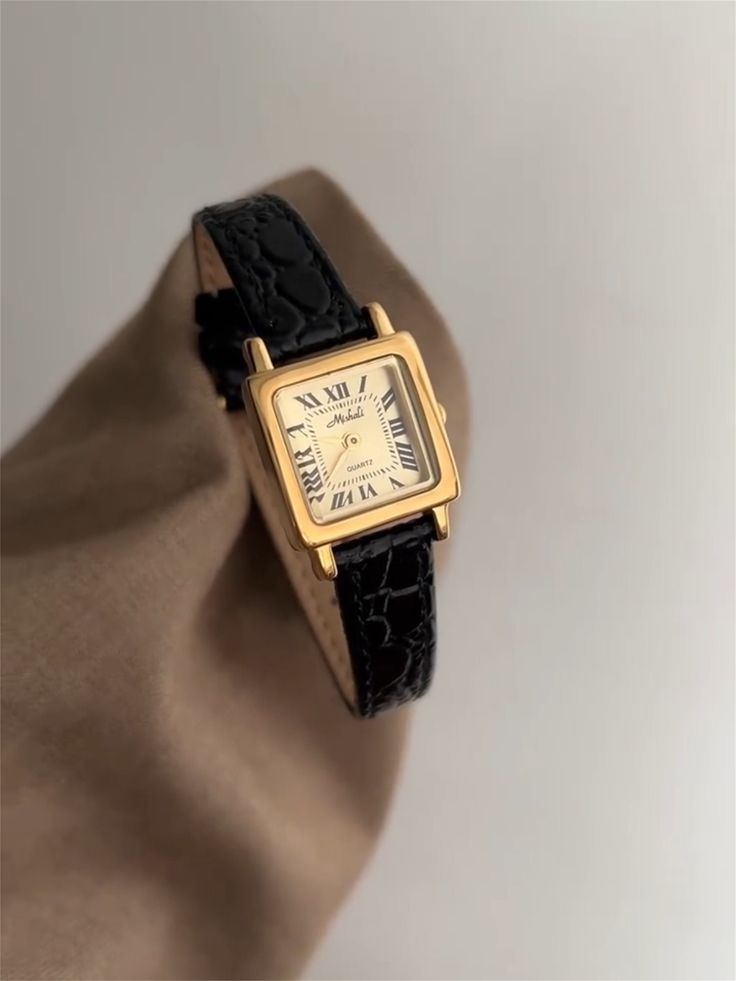

Explore Our Collection
As you embark on your journey through our carefully selected collection, you’ll find watches that capture the spirit of their eras. From the elegance of Art Deco designs to the rugged durability of military watches, we offer a variety of styles to suit every taste and occasion.
At Celeste, we understand that purchasing a vintage watch is not just a transaction; it’s an investment in a piece of art and history. Our team is committed to providing exceptional service, guiding you through the selection process, and ensuring that you find the perfect watch that resonates with your style and personality.
We invite you to join our community of vintage watch enthusiasts. Stay informed about our latest arrivals, exclusive offers, and insightful articles on watch care, maintenance, and the fascinating history of horology by subscribing to our newsletter.